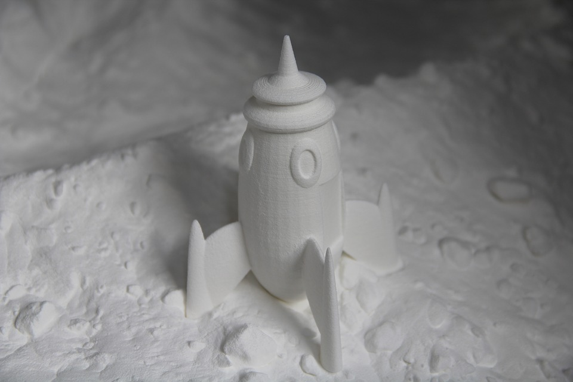
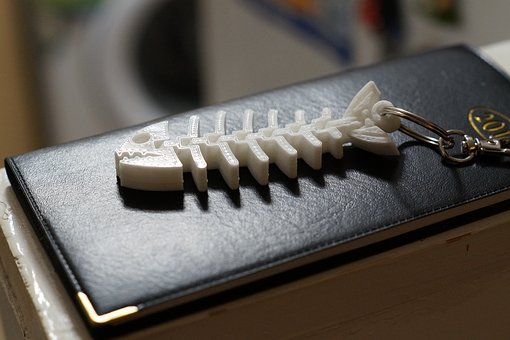

From an early age I fell in love with building things. I would have to guess it all started with legos,
possibly lincoln logs. Regardless, what I enjoyed was the ability to express your thoughts,
emotions, and in a way - your self. Taking ideas from the intagible realm and making them tangible, the mere concept,
while very rudamental to human life, still seems like it gets looked over. Anyways as I grew older I became instrested in other
hobbies but at there core they all shared a common interest: building. From woodworking to metal fabrication, I tried my hand at
many artistic pursuits so long as they allowed the creation of objects. In recent years, I started noticing a common phrase
peppered in my online browsing. 3D printing was everywhere I looked, from youtube to reddit - even facebook and instagram had
show cases of the wonders of 3D Printing. It branded itself as a mystical futuristic technology, often romanticised by sci-fi novels and films,
yet here now in our current age. Since it was compatible with my interest I decided to buy my own and give it a shot.
to the tangible realm.

SLA Rocket Print
Types of 3D Printing
When I talk about my experiences with 3D printing, I'm only talking about one type of 3D printing. FDM or Fused Deposition
Modeling, is when a machine heats up a plastic filament and extrudes it out of a moving nozel, moving in all axis to slowly build up layer by layer to build
the pre programed object. The next two types of 3D printers I will bundle together because of their similarities. SLA & DLP, sterolithography and Digital Light Proccessing respectively both use
light to harden liquid plastic. Essentially the main difference is that DLP projects a 2D image(layer) all at once, where as SLA uses a layer that focuses on
a "pixel" and acts more a FDM printer with the nozel being replaced by the laser in this comparison. The final type of 3D printer I wanted to
make note of is SLS or Selective Laser Sintering. This is in some ways comparable to SLA, since it also uses a laser to heat the material, which is this case is a powder rather
than a liquid. This property allows you to print metal objects - which opens a whle new world for 3D printing.

3D Printed Keychain
Real World Uses
I'll be the first one to admit that there very few practicle uses of a 3D printer in your home - for now at least.
Most people will make little trinkets or toys to take up space on their desk. However that doesn't mean there are no practicle uses for 3d printing.
As the technology has developed and patents have been released, we are seeing more practicle uses for 3D printing. Listed below
are a few specific examples where 3D printing was utilized to build something that traditional manufactoring couldn't do as well.
As you might be able to tell from the examples listed in the previous paragraph, there is tremendous promise
in the future of 3D printing. Specifically in areas like medicine, architecture and aerospace. For example in the medical field, 3D printing
is allowing for biological organs to be printed. It is also providing patients with prothestetics customized to fit them perfectly. In the architecture / construction field, 3D printing
is making it possible to build homes cheaper and quicker. Using an FDM style machine, a novel moves around as a layer of cement gets extruded. Finally in the aerospace field, you are able
to save a lot of money and time building intracate objects that would have taken a lot of time in money because of the ineficencies in regular subtractive manufactoring. In some cases it makes
it possible to build structures that otherwise couldn't be made using other manufactoring methods allowing for a whole new world of engineering to be based around it. Whatever the future has in store,
3D printing is going to be a integral part of inspiring future generations to not limit their belief in what's possible.